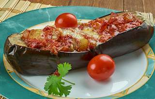

Naz khatun is an authentic Iranian vegetable condiment which originated in the city of Behshahr. It is prepared with fire-roasted or oven-roasted eggplants, a rather large amount of herbs, and the unusual verjuice, a zesty drink made from unripe grapes. Roasted eggplants are roughly or finely chopped, then mixed with fragrant herbs such as mint, basil, and parsley. Traditional versions may also include garlic, pomegranate molasses, and powdered wild celery, also known as angelica. Sour verjuice is added in the end to infuse the ingredients and bind them into a more homogenous paste.
Meal prep time : 30 minutes
Servings : 4